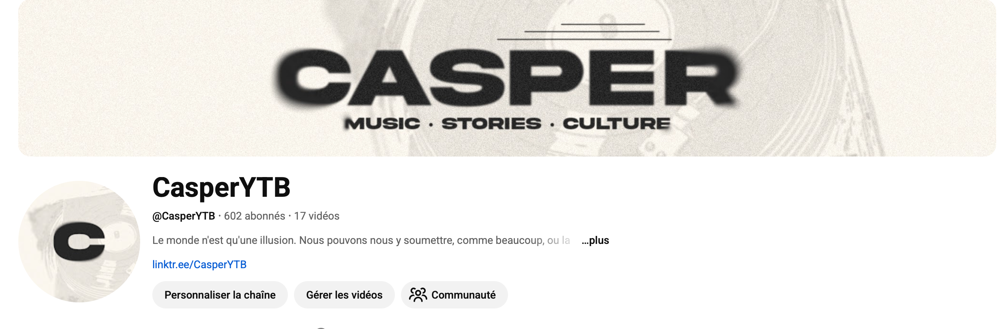

Miniatures, montages vidéo et créations digitales nées de ma passion.
Étant passionné de création digitale, dans le cadre de ma chaîne YouTube, j'ai eu l'occasion de réaliser des miniatures afin de mettre en avant mon contenu et de maximiser le taux de clics par impression.
La création d'une miniature est très importante car c'est elle qui va directement jouer sur le référencement de la vidéo.
J'ai également pu réaliser le montage vidéo des vidéos dont j'ai fait les miniatures sur ma chaîne YouTube personnelle : CasperYTB.
J'aime apprendre à réaliser des effets, à comprendre un logiciel. Je monte sur Adobe Premiere, Adobe After Effects, et j'effectue mes mixages sonores sur Adobe Audition.
Cela m'a également permis de proposer mes services à d'autres YouTubers contre une rémunération.
